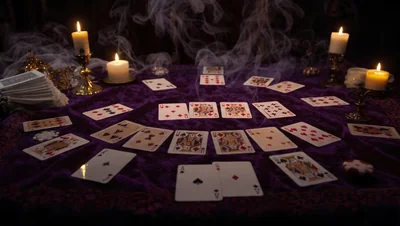
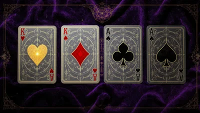
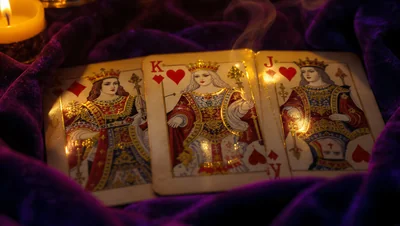
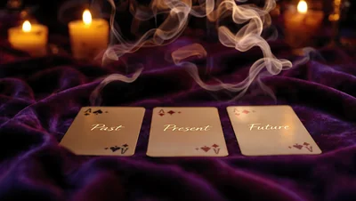

Oltre ai Tarocchi e alle Rune, la tradizione divinatoria custodisce molti altri linguaggi simbolici. In questa sezione trovi sei oracoli alternativi gratuiti: la Cartomanzia con le 52 carte da gioco, il Lenormand a 36 carte, l'Oracolo degli Angeli, l'Oracolo dei Celti basato sull'alfabeto Ogham, lo Specchio Nero per la pratica dello scrying e la Cromomanzia, la divinazione attraverso i colori.
🎴 Cartomanzia con le Carte da Gioco

La cartomanzia è una delle forme di divinazione più antiche e diffuse al mondo: l'arte di interrogare il futuro attraverso un comune mazzo di 52 carte da gioco. Nata in Asia e giunta in Europa nel XIV secolo attraverso mercanti e viaggiatori, la cartomanzia si è radicata nella tradizione popolare italiana e francese prima ancora che i Tarocchi diventassero strumenti divinatori.
A differenza dei Tarocchi — che nascono come gioco di corte e diventano strumento esoterico solo nel XVIII secolo — le carte da gioco vengono usate per la divinazione fin dalla loro comparsa in Europa, circa il 1370. Ogni seme non è scelto a caso: cuori, quadri, fiori e picche sono l'eredità delle quattro classi sociali medievali e delle quattro stagioni dell'anno.
«Le carte da gioco arrivano in Europa durante il regno di Carlo V di Francia (1364-1380). Entro la fine del '300, a Firenze, Milano e Venezia esistono già cartomanti che le usano per predire il futuro.»
— Fonti storiche sulla cartomanzia europea
Estrai tre carte per una lettura Passato · Presente · Futuro.
♥ ♦ ♣ ♠ I 4 Semi

Ogni seme governa un'area precisa dell'esistenza. Quando una lettura produce più carte dello stesso seme, quell'area della vita è dominante nel momento presente.
👑 Le Figure e i Numeri

Nelle 52 carte le figure (Re, Donna, Fante) rappresentano persone reali o archetipi energetici che influenzano la situazione. Il loro seme ne colora la natura.
🔮 Come Si Legge la Cartomanzia

La cartomanzia tradizionale italiana segue regole semplici che si tramandano da generazioni. Non serve essere "dotati": serve concentrazione, onestà e disponibilità ad ascoltare ciò che emerge.
Estrai le tue carte qui sotto e osserva la lettura generata.
🍀 Oracolo Lenormand

Il Lenormand è un sistema oracolare di 36 carte nato nell'Europa del XVIII secolo, popolarissimo ancora oggi in Francia, Germania, Svizzera e nei paesi dell'Est. Il nome viene da Marie Anne Lenormand (1772–1843), la cartomante più famosa della storia europea: consultata da Napoleone Bonaparte, Joséphine de Beauharnais, Alessandro I di Russia e dall'imperatrice Giuseppina.
In realtà il mazzo che oggi chiamiamo "Lenormand" — conosciuto anche come Petit Lenormand o Das Spiel der Hoffnung ("Il Gioco della Speranza") — fu pubblicato in Germania nel 1799, quando Marie Anne aveva soli 27 anni. Il suo nome fu associato al mazzo solo postumo, dopo la sua morte nel 1843, per sfruttare la fama leggendaria della veggente.
«Marie Anne Lenormand fu processata e incarcerata più volte per le sue profezie, considerate pericolose dai regimi napoleonici. Eppure continuò a leggere le carte per decenni, diventando la figura più influente della cartomanzia europea moderna.»
— Storia della cartomanzia europea, XVIII-XIX sec.
Estrai tre carte per una lettura Situazione · Influenza · Esito.
⚖️ Come Differisce dai Tarocchi

La differenza fondamentale non è solo numerica. Il Lenormand è un oracolo diretto e narrativo: le carte si combinano tra loro come parole in una frase, creando significati che vanno oltre il singolo simbolo. I Tarocchi invece lavorano per archetipi e simbolismi profondi, lasciando spazio a molte interpretazioni.
Nel Lenormand non esistono Arcani Maggiori o Minori: tutte le 36 carte hanno lo stesso peso. I simboli sono oggetti del mondo reale — una casa, una lettera, un cane — interpretati concretamente. La Bara non significa morte ma fine di un ciclo; la Volpe non è il male ma l'astuzia necessaria.
🔑 Le 36 Carte Principali

Ogni carta del Lenormand porta un simbolo quotidiano e un significato diretto. Toccale o usale come riferimento durante la tua lettura.
📖 Come Si Legge

Il segreto del Lenormand è la combinazione: le carte non si leggono isolatamente ma come parole di una frase. La carta centrale risponde alla domanda, quella a sinistra indica l'influenza passata o la causa, quella a destra la direzione futura o la conseguenza.
Prova la lettura a tre carte: Situazione · Influenza · Esito.
👼 Oracolo degli Angeli

L'Oracolo degli Angeli è un mazzo divinatorio moderno composto da carte che racchiudono un singolo concetto-chiave — fiducia, guarigione, coraggio — accompagnato da un breve messaggio di guida. A differenza dei Tarocchi, non racconta una storia complessa: offre una risposta diretta e confortante a una domanda del cuore.
Il formato che conosciamo oggi nasce negli Stati Uniti negli anni '90, quando l'autrice Doreen Virtue pubblicò i primi mazzi di "Angel Cards", ispirati alla tradizione popolare degli angeli custodi presente in quasi tutte le culture religiose e spirituali. Da allora il genere si è moltiplicato in decine di varianti, restando uno degli oracoli più diffusi al mondo per la sua semplicità d'uso.
«La credenza in messaggeri celesti che vegliano sull'uomo attraversa l'ebraismo, il cristianesimo, l'islam e numerose tradizioni popolari europee: dagli angeli custodi medievali ai nove cori angelici descritti da Pseudo-Dionigi l'Areopagita nel V secolo.»
— Tradizione angelologica occidentale
È importante distinguere l'Oracolo degli Angeli, strumento di riflessione personale e crescita interiore, dall'Angelologia religiosa tradizionale, che cataloga formalmente 72 o più entità in gerarchie precise: il primo si rivolge all'intuizione, la seconda alla teologia.
Nella Cabala ebraica, ad esempio, gli angeli sono organizzati in dieci ordini corrispondenti alle Sefirot dell'Albero della Vita, mentre la tradizione islamica ne riconosce alcuni con compiti specifici, come Jibril (Gabriele) portatore della rivelazione. L'oracolo moderno non riprende questa complessità dottrinale, ma ne eredita l'idea di fondo: l'esistenza di una guida invisibile e benevola a cui rivolgersi nei momenti di incertezza.
✨ I Quattro Arcangeli Principali

Molti mazzi oracolari associano i propri messaggi a quattro figure arcangeliche ricorrenti nella tradizione giudaico-cristiana, ciascuna legata a un'area simbolica precisa:
📖 Come Interpretare il Messaggio

A differenza della cartomanzia o dei Tarocchi, l'Oracolo degli Angeli non richiede combinazioni complesse: il valore della pratica sta nella concentrazione e nell'accoglienza del messaggio.
Concentrati sulla tua domanda e lascia che il messaggio emerga.
🔢 I Numeri Angelici
Un fenomeno strettamente legato all'Oracolo degli Angeli è quello dei cosiddetti numeri angelici: sequenze ripetute come 11:11, 222 o 444 che molte persone notano con insistenza su orologi, targhe o ricevute. Nella pratica oracolare contemporanea, popolarizzata insieme alle carte angeliche a partire dagli anni '90-2000, ogni sequenza viene letta come un messaggio sintetico:
Che si scelga di interpretarli come sincronicità junghiana o come segnale simbolico, i numeri angelici rappresentano oggi una delle porte d'accesso più popolari alla pratica oracolare, spesso complementare alla lettura delle carte.
🌳 Oracolo dei Celti — Alfabeto Ogham

L'Ogham (si pronuncia "óh-am") è l'antico alfabeto sacro dei popoli celtici dell'Irlanda e della Scozia, attestato a partire dal IV secolo d.C. su monoliti di pietra, dove le iscrizioni segnavano confini territoriali e tombe. Ogni segno è composto da linee incise lungo uno spigolo verticale — il druim — e ciascuna lettera è associata al nome di un albero o di una pianta sacra.
La leggenda attribuisce l'invenzione dell'Ogham al dio Ogma, divinità della parola e dell'eloquenza nella mitologia irlandese, da cui l'alfabeto prende il nome. Era utilizzato da druidi e bardi non solo per scrivere, ma come sistema mnemonico per memorizzare leggi, genealogie e conoscenze botaniche e astronomiche, in una cultura orale che affidava poco alla scrittura.
«Il Book of Ballymote, manoscritto irlandese del XIV secolo, raccoglie oltre cento varianti dell'Ogham e ne spiega l'uso anche come codice cifrato tra druidi, segno della sua dimensione esoterica oltre che pratica.»
— Tradizione manoscritta irlandese medievale
Come oracolo, l'Ogham fu riscoperto e sistematizzato solo nel XX secolo, in particolare grazie agli studi del poeta Robert Graves ne "La Dea Bianca" (1948), che collegò ogni albero a un periodo del calendario lunare celtico.
🌲 Le Quattro Aicme

L'alfabeto Ogham classico è composto da 20 lettere principali, suddivise in quattro famiglie da cinque segni chiamate Aicme ("famiglia" in gaelico antico). Una quinta serie di lettere aggiuntive, chiamata Forfeda, fu introdotta più tardi per rappresentare suoni greci e latini.
Questa organizzazione non era casuale: rifletteva la classificazione botanica celtica degli alberi in "nobili" (querce, meli) e "comuni", e il loro ruolo pratico nella vita quotidiana — costruzione, medicina, combustibile, magia.
📖 Come Si Consulta l'Oracolo

Tradizionalmente i druidi intagliavano i simboli su piccoli bastoncini di legno (feda), estratti a caso da una sacca come si farebbe oggi con le rune. Ogni albero porta con sé non solo un significato divinatorio ma anche proprietà curative ed energetiche attribuite dalla tradizione erboristica celtica.
Consulta gli Ogham per ricevere la guida dell'albero che ti rappresenta in questo momento.
🪞 Specchio Nero

Lo scrying con lo specchio nero è una delle pratiche divinatorie più antiche e diffuse al mondo: si osserva una superficie scura e riflettente lasciando che la mente entri in uno stato contemplativo, finché non emergono forme, ombre o impressioni simboliche da interpretare. Il termine deriva dall'inglese to descry, "scorgere", "distinguere a fatica".
La pratica ha radici antichissime: gli specchi in ossidiana venivano usati dagli Aztechi già nel XV secolo, mentre in Europa lo scrying con superfici scure — acqua, inchiostro, cristalli affumicati — è documentato fin dall'antichità classica. Il caso più celebre è quello dell'astrologo elisabettiano John Dee, che nel XVI secolo utilizzava uno specchio di ossidiana per le sue sedute divinatorie alla corte di Elisabetta I d'Inghilterra.
«Lo specchio di John Dee, oggi conservato al British Museum, è ricavato da un singolo blocco di ossidiana levigata di origine messicana, probabilmente portato in Europa al ritorno dei conquistadores.»
— Storia dello scrying occidentale, XVI sec.
Lo scrying non si limita allo specchio nero: nella storia della divinazione la stessa tecnica contemplativa è stata applicata a sfere di cristallo, pozze d'acqua scura, inchiostro versato su un piatto (la lecanomanzia babilonese) e persino fiamme di candela. Il principio comune è sempre lo stesso: una superficie priva di dettagli definiti diventa uno "schermo" su cui la mente proietta immagini provenienti dall'intuizione e dal subconscio, un processo che la psicologia moderna avvicina al fenomeno della pareidolia guidata dallo stato meditativo.
🕯️ Come Si Pratica lo Scrying

A differenza della cartomanzia, lo scrying non lavora con simboli fissi: ogni immagine percepita va interpretata in base al contesto personale e alla domanda posta, più come un sogno a occhi aperti che come un sistema codificato.
🔮 Superfici, Materiali e Precauzioni
Non esiste un unico "specchio nero corretto": nel corso della storia sono stati impiegati materiali diversi, ciascuno con una qualità energetica leggermente differente secondo la tradizione esoterica.
Indipendentemente dal materiale, la pratica costante è più importante della "qualità" dello strumento: le prime sedute spesso non producono visioni nitide, e questo è del tutto normale. Lo scrying è una capacità che si affina nel tempo, come un muscolo percettivo.
🎨 Cromomanzia

La cromomanzia interpreta i colori come messaggeri energetici: il colore che ti attrae istintivamente in un dato momento rivela uno stato interiore o un'energia di cui hai bisogno. È una delle forme di divinazione più immediate, perché non richiede simboli da memorizzare ma solo l'ascolto di una reazione spontanea.
Il legame tra colore e significato simbolico affonda le radici nell'antico Egitto, dove i sacerdoti usavano camere colorate per scopi terapeutici, e si ritrova nella tradizione indiana dei chakra, i centri energetici del corpo associati ciascuno a un colore specifico. In epoca moderna, la cromoterapia e la psicologia del colore — penso agli studi di Goethe sulla teoria dei colori nel XIX secolo — hanno dato nuova base a queste antiche intuizioni.
«Ogni colore vibra a una propria frequenza e produce un effetto preciso sullo stato mentale ed emotivo: una corrispondenza che la tradizione esoterica conosceva intuitivamente molto prima della fisica delle onde luminose.»
— Tradizione della cromoterapia simbolica
Anche le grandi tradizioni spirituali orientali hanno costruito sistemi complessi attorno al colore: nello Yoga e nell'Ayurveda i sette chakra principali — dal rosso del Muladhara alla base della colonna fino al violetto del Sahasrara sulla sommità del capo — formano una scala cromatica che rispecchia l'intera mappa energetica del corpo. La cromomanzia che pratichi qui ne è una versione semplificata e accessibile, pensata per un check-in rapido sul proprio stato interiore.
🌈 Il Linguaggio dei Colori

Ogni colore porta con sé un'energia riconoscibile. Ecco alcuni dei significati cardine usati nella lettura cromomantica:
🎨 Estrai il Tuo Colore
Puoi scegliere consapevolmente il colore che ti attrae di più in questo momento, oppure lasciare che sia l'oracolo a estrarlo casualmente: entrambi gli approcci sono validi, perché anche la scelta istintiva nasce da un impulso significativo.
🖌️ Letture Combinate e Contesti d'Uso
Oltre all'estrazione di un singolo colore, alcuni praticanti scelgono due colori in sequenza per ottenere una lettura più articolata: il primo rappresenta la situazione attuale, il secondo l'energia verso cui muoversi. Le combinazioni più ricorrenti hanno significati riconoscibili:
La cromomanzia si presta anche ad applicazioni quotidiane molto concrete: scegliere il colore di un abito, di un ambiente o persino di un fiore da regalare in base all'energia che si vuole trasmettere è una forma pratica della stessa logica simbolica, già nota agli arredatori e ai terapisti del colore.